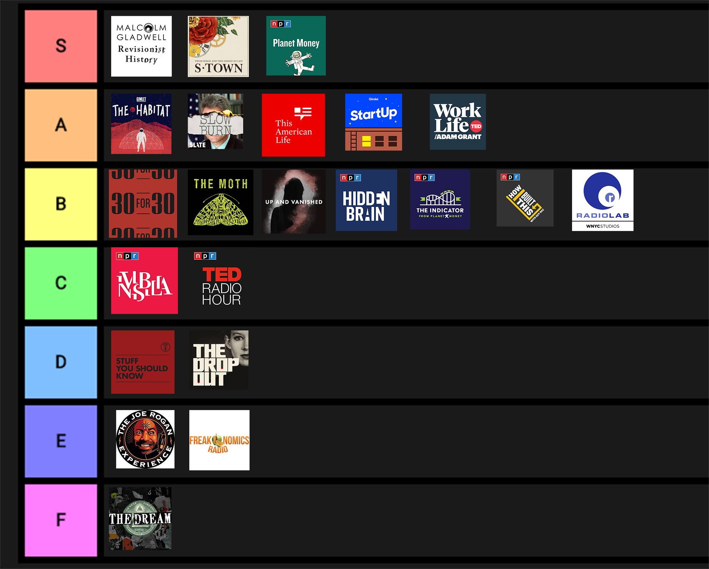

A Tier List for Podcasts
Recently, using tier lists for things other than video games, such as fast food or presidents, has become popular. Since I love ranking my favorite things, I thought I would make a tier list for podcasts.
The reason I choose podcasts, is because I think they are an underrated part of the iPhone and should be used more often. It's like being able to read news articles or short stories but audibly, and you can do other things while you listen.
If you don't know much about podcasts, some podacasts have seasons and some don't similar to tv shows. In addition, some podcasts are meant to be listened to in order, which I am calling storyline podcasts, whereas othe podcasts can be listened to in pretty much any order, I call these ones, single episode stories or SES for short. Not check out my ratings for these podcasts.

30 for 30
Ranking: B
Sporty Podcast about different interesting things that happen or have happened in the world of sports. I’ve listened to most of the episodes in the past 4 seasons, and it is an exciting and great podcast for any sports lover like me.
Type: SES
Favorite Episodes: All In, Yankees Suck
4 Seasons
The Dream
Rainking: F
An investigative podcast about a pyramid scheme that I didn’t exactly enjoy. Someone Might find this interesting, but I’m not one of them. I listened to this as I was doing chores around the house and I just eventually found myself not listening because I thought it was so boring. The Dream is about a pyramid scheme and how it became popular.
Type: Storyline
1 Season
The Habitat
Rainking: A
One of my favorite podcasts to listen to. It is a great podcast about a simulated mars colonization on the big island of Hawaii. It is amazing to see how people react when they are stuck together in a small space for a full year, not only do you get to learn more about each and every one of them, but you also get to listen to their relationships evolve throughout time.
Type: Storyline
1 Season
Slow Burn
Rainking: A
A political Podcast which I very much enjoy. I’m very interested in politics and this discussion about a possible Trump impeachment is on the mind of everyone. This podcast dives into the past two impeachments and how everything went down.
Favorite Season: Nixon. Much more interesting than the Clinton season.
Type: Storyline
2 Season
Serial
Ranking: A
A true crime podcast and quite possibly one of the best podcasts of all time. First season is beyond S tier, but the second completely trashes it and is about a B tier, but the third season is an A tier. Personally I think this averages out to an A tier. This podcast is about the conviction of alleged murder Adnan Syed for season one, the story of Bowe Bergdahl for season two and multiple stories about crime in Chicago for season three (“one courthouse told week by week”).
Favorite Season: One Obviously!
Type: Varies for each Season (1: storyline, 2: storyline, 3: SES)
3 Seasons
This American Life
Ranking: A
This podcast is one of the best at storytelling, and is almost exactly what you would think of… a perfect calming voice telling you about something kind of random story but making it sound really cool, probably cooler than it is. The quality of the episodes vary but the best episodes are usually an A tier.
Favorite Episode: 129 Cars (only on internet, not on apple podcasts app)
Type: SES
No Seasons
Freakonomics
Ranking: E
A podcast about various scientific topics, seems like a good podcast but too scientifically tenciqual for me, makes me bored really easily. Most of the podcasts are the Freakonomics team answering questions that have either popped into their head or have been asked.
Favorite Episode: None really pop out
Type: SES
No Seasons
Radiolab
Ranking: B
A great podcast about scientific stories, offering very interesting scientific explanations for why somethings happen. The best episodes dive deeply into certain experiments and do them. Very interesting, but recently hasn’t really been very good which gives it a B.
Favorite Episode: Part 1: CRISPR & CRISPR Update
Type: SES
No Seasons
Joe Rogan
Ranking: E
A good interviewing podcast, Joe can help you learn about his interviewee. Very good, but a little outlandish for me… Joe is truly crazy. Also a little slow and a little long (usually around 3 hours), great highlights if you want to watch on youtube.
Favorite Episode: Elon Musk
Type: Interview
No Seasons.
Planet Money
Ranking: S
Interesting podcast about economics. Good explanations and thought experiments about many many topics, from meddling in elections to why arts cost so much. I love this so much because every episode is so interesting.
Favorite Episodes: Oil #1, #2, #3 and #4
Type: SES (except “Oil” series)
No Seasons.
Drop out
Ranking: D
Interesting story about Elizabeth Holmes and the Theranos scandal. Cool story, but after a little while, seems very boring. Might have just been my personal taste, but it finished really poorly.
Type: Storyline
1 Season
How I Built This
Ranking: B
Good podcast about entrepreneurs and how they started their companies. Big dives into great companies, helping me understand how to make a good company and what companies become successful.
Favorite Episode: Instagram
Type: Interview
No Seasons.
TED radio hour
Ranking: C
Educational podcast discussing anything scientifically related. This podcast can be very deeply interesting, but can get somewhat bland at times. If you want to be educated on something, this is the podcast to listen to.
Favorite Episode: Screen Time 1 and Screen Time 2
Type: SES
No Seasons.
Indicator
Ranking: B
This economical podcast is very similar to Planet Money. It is done by the same people, but it is short, about 10 minute episodes, produced about 3 times a week. Most episodes are very interesting, but I like the deep dive of the Planet Money, 20 minute episodes, better.
Favorite Episode: What surfing can teach us about risk
Type: SES
No Seasons.
Hidden Brain
Ranking: B
An interesting psychological podcast about anything that has to do with your brain. Extremely interesting and I think everyone should listen to at least one episode to see if they like it, but I don’t exactly enjoy psychological stuff as much as economics or story-telling podcasts.
Favorite Episode: Eyes Wide Open part 1 and part 2
Type: SES
No Seasons.
Invisibilia
Ranking: C
A podcast about “the invisible factors” that affect our lives. A little bit freaky, but very interesting and it changes my perspective on life in a very special way.
Favorite Episode: The Secret Emotional Life of Clothes
Type: SES
5 Seasons
S Town
Ranking: S
A podcast very similar to Serial, by similar people (the Serial podcaster helped this work on this podcast). This story about a very odd man and how his life has unfolded definitely deserves an S rank for all the wild things that happens throughout the podcast.
Type: Storyline
1 Seasons
Stuff You Should Know
Ranking: D
A podcast about the technicalities of things and well, How things work basically. Can be extremely bland if you just listen to random episodes, but some specific episodes can be very good and deserve a high ranking, just not that many are worth listening to.
Favorite Episode: #1,000 how the Simpsons works
Type: SES
No Seasons.
Up and Vanished
Ranking: B
A true crime podcast almost identical to serial. A great story about how a man was convicted for a murder that he might not of commited. The only reason it deserves such a low score is becase it seems like such a copy of Serial, if it came out before serial, it would of been much much better, but it seems like a copy of serial.
Type: Story Line
1 Season w/ updates
The Moth
Ranking: B
An interesting 20 minute episode podcast about random stories that random people tell. It can be extremely interesting when good people tell a good story, but that can become somewhat rare when you get so many people telling so many stories.
Favorite Episode: The Curse
Type: SES
No Seasons.
Revisionist History
Ranking: S
A great history podcast about “things commonly overlooked or misunderstood.” I personally enjoy all of Malcolm Gladwell's work so so much and I find this podcast to be no different. I think everyone should at least listen to one of his podcasts or listen to at least one of his books.
Favorite Episode: Mcdonalds broke my heart and many other episodes.
Type: SES
No Seasons.
Work Life with Adam Grant
Ranking: A
A very interesting podcast about your work life and all about how to be more productive and just have a better time working. I enjoy trying to be as efficient and productive as possible and this is extremely helpful for that goal.
Favorite Episode: The Office Without Assholes
Type: SES with Lessons
2 Seasons
Start Up
Rainking: A
This podcast is extremely meta. It is a podcast about a man trying to start a podcast production company. It is one of the best podcasts I have ever listened to and I believe that it is one of the reasons why I want to be an entrepreneur, because this podcast encompassed all that starting a business is, all the good and all the bad.
Favorite Series: Gimlet
Type: Series Storytelling
No Seasons more like Series.